NetMatch*
An enhanced Cytoscape network querying app
NetMatch* is a Cytoscape app that allow user to find all the occurrences of a query graph in a network and check for its significance as a motif with respect to seven different random models. The query can be uploaded or built from scratch using Cytoscape facilities. NetMatch* also allows queries with wildcards.
Download
Before downloading, be sure to have Cytoscape 3.x and Java installed. Source code are available here or on GitHub. See the installation section of manual for installation howto.
References
Rinnone F, Micale G, Bonnici V et al. NetMatchStar: an enhanced Cytoscape network querying app [version 2; referees: 2 approved] F1000Research 2015, 4:479 (doi: 10.12688/f1000research.6656.2).
Introduction
Biological networks such as protein-protein interaction, transcription regulatory, gene regulatory, and metabolic networks are often referred to as complex systems. The term complex relates to the existence of non-trivial substructures contained within them. The study of complex systems involves the analysis of the way in which their elements interact rather than only their individual roles. Computationally, such a study entails the ability to query networks to find specific patterns of interactions.
Possible queries might include the identification of positive and negative autoregulation, coherent and incoherent feed forward loops, single-input modules and dense overlapping regulons in a given target network N. Sub-networks that occur surprisingly often in a network may be preferred by evolution. For that reason, NetMatch* offers the ability to compute a p-value against seven random null models and suggests the one that shares the network properties of N in terms of degree distribution, cluster coefficient and assortativity.

NetMatch* 3.1
NetMatch* works on Cytoscape (3.2.1) and is based on the NetMatch software. It deals with both exact queries and approximate ones, in which wildcards are used to match unspecified number of elements.
NetMatch* integrates the RI algorithm proposed for biological real networks which outperforms other existing algorithms, whose efficiency is mainly due to the choice of a search strategy, i.e. the ordering with which query nodes are mapped. For example, a variable ordering may begin with a query node having the highest degree or having the most uncommon label in the target graph. The variable ordering of RI is based only on the query graph topology. Roughly, the chosen order creates constraints as early as possible in the matching phase. The nodes having high valence and that are highly connected with nodes previously present in the ordering tend to come early in the variable-ordering. The aim of RI is to avoid costly pruning techniques by finding a static search strategy such that the number of constraints that are verifiable from a partial solution are maximized.
NetMatch* also supports approximate querying. Approximate queries are graphs with unspecified structures. They may contain nodes and edges which can match any value of node or edge labels in the network and approximate paths constrained in length to be less than or greater than m, where m is a positive integer. NetMatch* first matches all the specified subparts of the queries exactly and then joins the matches by network traversal. The network traversal phase checks that all traversed paths satisfy the query path constraints.
Installation
Open the "App Manager" from "Apps" menu in Cytoscape and select "Install From File...".
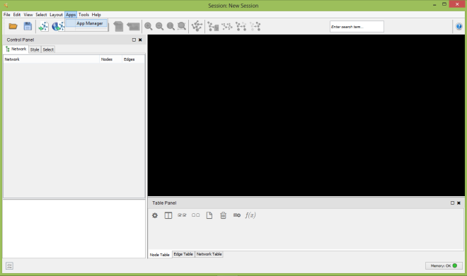
Cytoscape App Manager
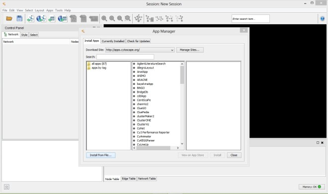
Install NetMatch* from file
After a few seconds NetMatch* will be installed as app in Cytoscape.
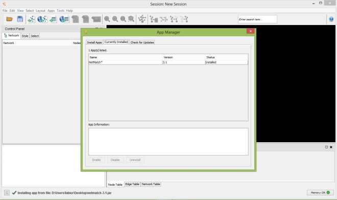
NetMatch* successfully installed
Options
The main frame of NetMatch* contains three tabbed panels:
- "Matching" panel, to specify the target and the query graphs and run the matching task;
- "Significance" panel, for the statistical significance of the query as a motif according to a specific random model;
- "Motif library" panel, which contains a set of predefined queries for the matching task.
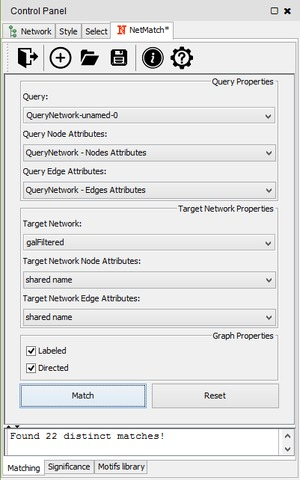 |
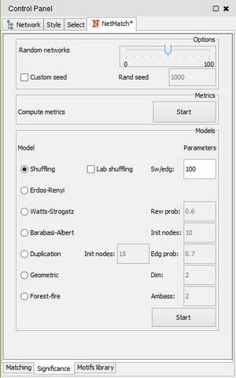 |
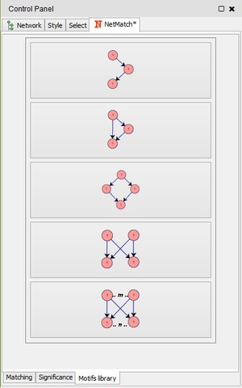 |
Matching panel |
Significance panel |
Motifs library panel |
Loading input data
Query and network graphs can be uploaded in NetMatch*, by clicking on the folder icon at the toolbar of "Matching" panel. Each uploaded network will be added to the Network list of Cytoscape. In the drop-down lists of "Network Properties" and "Query Properties" section, the user can select one of the uploaded networks as a query or target network for the matching and statistical significance tasks. Likewise, the user may upload node and edge labels as Cytoscape attributes and link them to the nodes and edges of the target network and query graph.
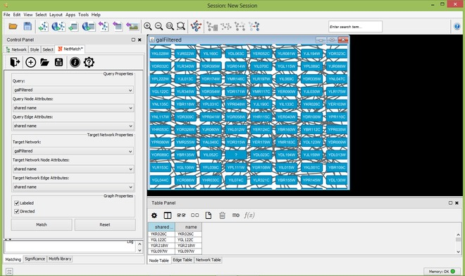
Target network
Drawing query
To create a new query, the user must click on the "plus" icon of "Matching panel". A new panel for the creation of a new network will be opened. A right click on the panel will open the standard Cytoscape menu to add, edit or remove elements of the graph. Such a menu also includes the "NetMatch*" menu item, which let the user change the label of a node or edge and set a path between two nodes. By default, newly added nodes and edges will be labeled with the wildcard "?", meaning that the label of the element is unspecified. Any other character will be associated to a specific label. Paths between two nodes i and j are defined as special attributes for the edge (i,j). The length of a path is specified by an expression of the form a op b, where a and b are two integers (or the wildcard "?") and op is one of <,<=,>=,>,=. The "?" character is used to leave the minimum or maximum length of the path unspecified. For instance, the expression "? <= 2 " means that the corresponding path must have at most length 2, while "? > 3" corresponds to a path of length greater than 3. A query with a "?" character in at least a node and/or edge is an approximate query for NetMatch*.
By clicking on "Save" button on panel, the user can store the query graph created from scratch on disk as text files in a customized .SIF format with nodes and edges attribute files with extensions respectively .NA and .EA.
Create new query from scratch
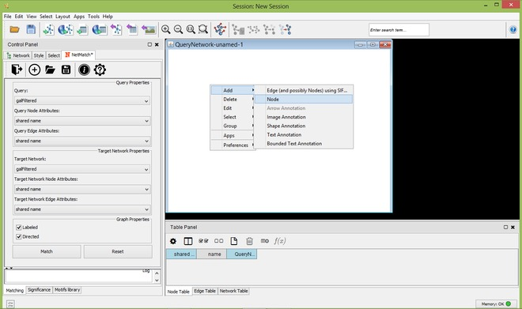
Add new node to query
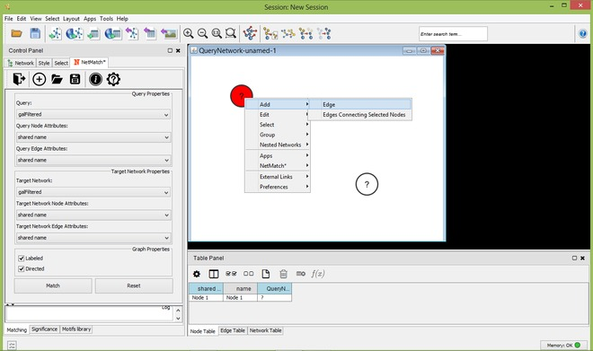
Add new edge to query
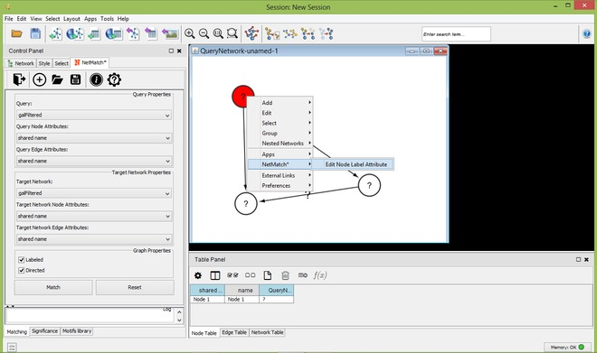
Edit node label attribute
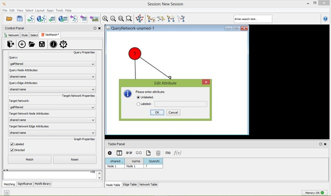
Query node unlabeled
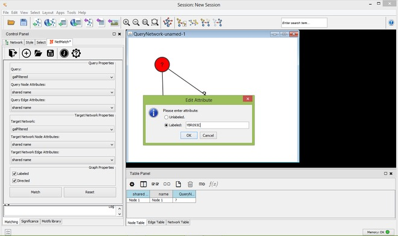
Query node labeled
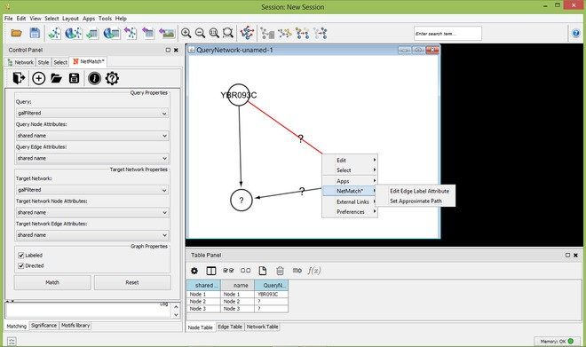
Query edge context menu
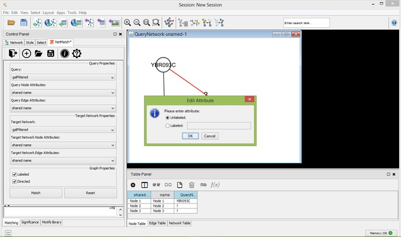
Edit edge label attribute
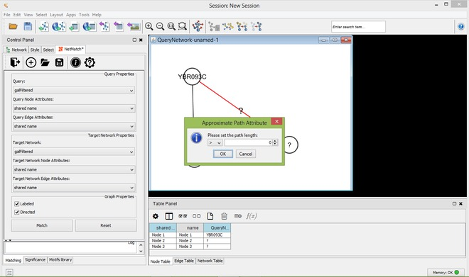
Set approximate path
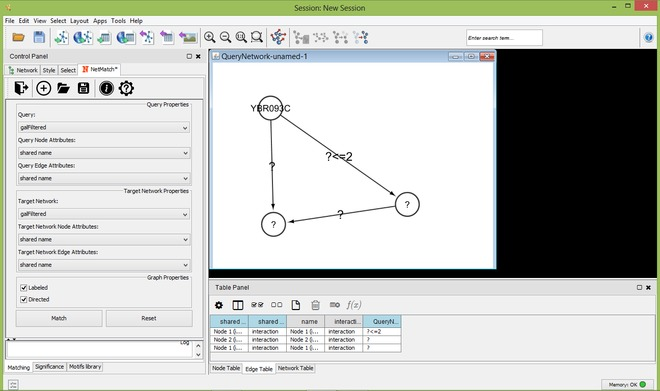
An approximate query
Motifs library
The pre-defined set of queries includes small topologies which have been identified as motifs in many real networks, such as feed-forward loops, diamonds, single-input modules and dense overlapping regulons. Pre-defined queries can be selected from the "Motifs library" tabbed panel. By clicking on one of these topologies, the user can visualize the query and modify it, as previously described, i.e. adding new nodes/edges, changing node/edge labels and setting paths between nodes.
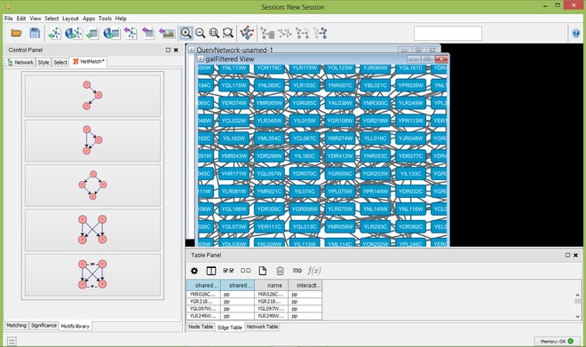
Set of pre-defined motifs

Bi-parallel motif
Managing results
Once a target network and a query has been provided in the "Matching" panel, the user can either look for all occurrences of the query within the input graph or check if the query. The user must click on the "Match" button in the "Matching" panel. Once the matching task has been completed, a table with all the occurrences of the query in the target will be shown as a tabbed panel in the "Result Panel" of Cytoscape and the input graph will be visualized. For each occurrence, NetMatch* reports its nodes and an image depicting its topology. By selecting a row in the table, the user can visualize the corresponding occurrence in the target network. If the option "Create a new child network" is disabled, nodes of the occurrence will be highlighted in yellow within the input network, otherwise the occurrence will be visualized in a separate window. By clicking on "Save" button on result panel, the user can store the results as text file.
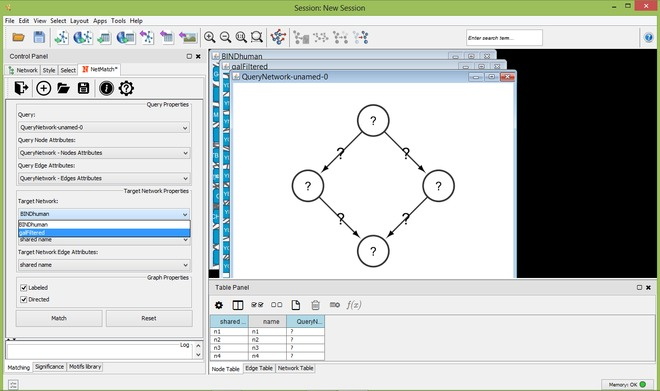
Select Target Network
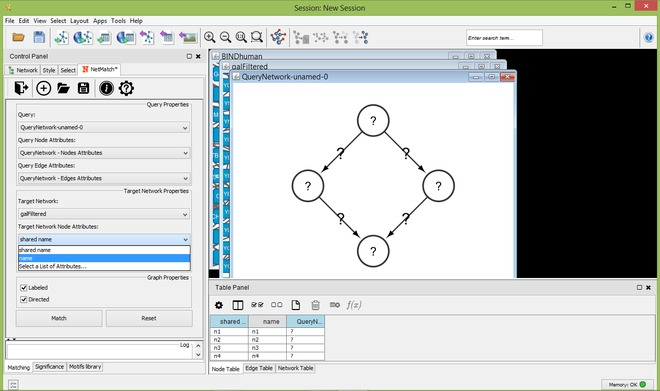
Select Target Network Node Attributes
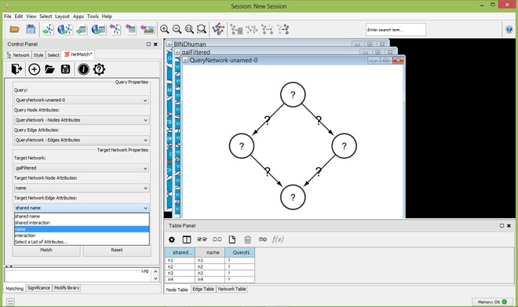
Select Target Network Edge Attributes
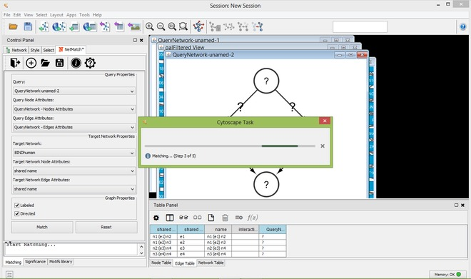
Matching

Matches founded
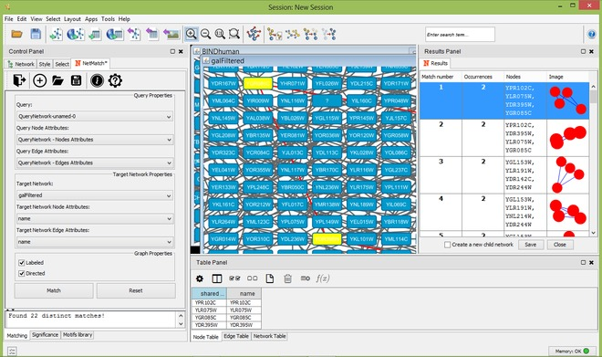
Select a match
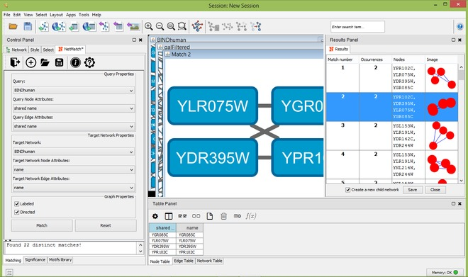
Select a match as a new child network
Significance
The "Significance" panel contains all the parameters for the evaluation of the statistical significance of a motif subnetwork. It consists of eight subpanels, one for each random model and one for the general settings of all models. In the top subpanel the user can choose the number of random graphs to generate for the statistical test (between 0 and 100) and compute a set of metrics for the input graph and sample random graphs, one for each model. Metrics include the average degree, the average clustering coefficient and the assortativity index. At the end of the computation, the resulting values are shown in a separate window. Values of these metrics can suggest to the user which random model best describes the features of the input network should be used.
The other subpanels let the user choose the parameters of each random model. In the "Shuffling model" panel, "sw/edg" denotes the number of successful swaps per edges. The "Erdos-Renyi" panel has no parameters. In the "Watts-Strogatz" panel, "Rew prob" is the probability of rewiring beta. The "Barabasi-Albert" panel defines "Init nodes", the number of initial nodes in the complete seed network. The "Duplication Model" panel has two parameters: "Init nodes", the number of nodes in the initial seed network, and "Edg prob", the edge duplication probability. In the "Geometric Model" panel, parameter "dim" denotes the dimension of the space where points are placed. Finally, the "Forest-Fire model" panel contains parameter "Ambass num", that is the number of ambassadors nodes. For each model, all the remaining parameters are estimated based on the number of nodes and edges of the target network.
To check if a query is a motif, the user must click on one of the "Start" buttons of the "Significance" panel, depending on the random model that has been chosen to perform the significance test. When the simulation ends, a window will appear with the following measures: the number of query occurrences in the real network, the mean and the standard deviation of the number of query occurrences in the random networks, the P-value and the Z-score.

"Significance" panel options
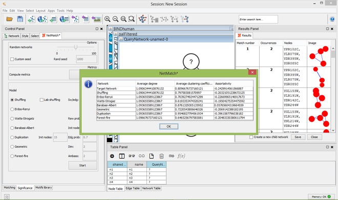
Compute metrics
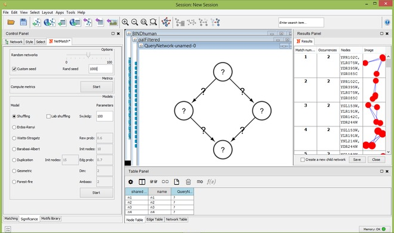
Set a random seed
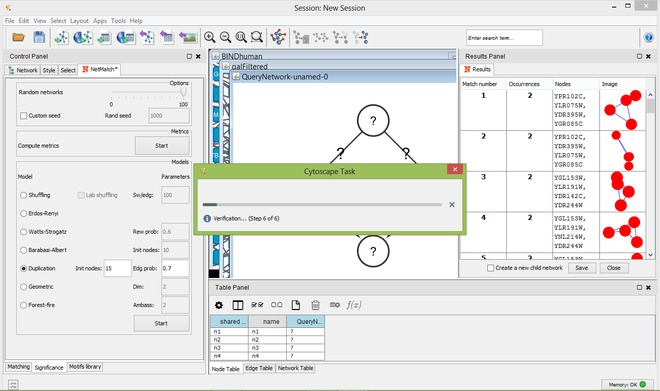
Verification
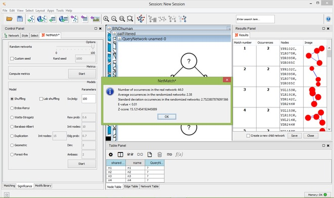
"Significance" results
Bugs report
For any bugs report, please send an email to: giugno@dmi.unict.it.
About
NetMatch* is developed by:
Fabio Rinnone, Giovanni Micale
Department of Maths and Computer Science
University of Catania, Catania, 95125, Italy
Vincenzo Bonnici
Department of Computer Science
University of Verona, Verona, 37134, Italy
Gary D. Bader
The Donnelly Centre
University of Toronto, Toronto, Ontario M5S 3E1, Canada
Dennis Shasha
Department of Computer Science
Courant Institute of Mathematical Science
New York University, New York, NY 10012, U.S.A.
Alfredo Ferro, Alfredo Pulvirenti, Rosalba Giugno
Department of Clinical and Experimental Medicine
University of Catania, Catania, 95125, Italy